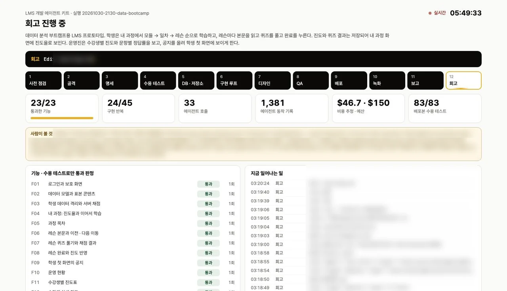

사내 학습 플랫폼(LMS) 개발과 운영
레거시 LMS의 불편을 사내 AX 교육 과제로 정리해 Claude Code로 만든 학습 플랫폼입니다. 수강생은 교안을 읽고 코드를 실행하며 퀴즈와 과제를 냅니다. 담당 과정에서 시험 운영한 뒤 지금은 7개 과정이 씁니다.
- 요구 사항 정의, 정책 결정, 시안 검토, 운영 배포 지시. 제품 TF의 LMS 2.0(차세대 플랫폼) PO
- Claude Code 에이전트로 구현, 테스트 작성, 원인 진단과 성능 측정. 작업 세션은 운영, 개발 서버, 콘텐츠로 분리
- Next.js, TypeScript, Supabase(Postgres), Netlify Functions, GitHub Actions, Playwright
- 사용자 104명(수강생 85명, 운영진 19명), 화면 30개, API 71개, 테스트 파일 451개
결과
- 사용 과정
- 고치기 전 1개고친 뒤 7개
- Claude Code가 공동 작성자로 기록된 커밋2026년 4~10월의 main 브랜치, 커밋한 날 102일
- 1,625건 중 88.7%
- 사내 에이전트 활용 사례 평가LMS 개발 에이전트 키트. 최고 등급은 매출·비용 직접 연계 단계
- 3단계 가운데 최고 등급
- 에이전트 키트의 첫 실행기능 23개(QA에서 추가한 9개 포함), 5시간 47분, 추정 비용 47.7달러(회고 포함). 실행 도중 키트를 보강하며 하네스를 7번 이어 실행
- 수용 테스트 83건 통과
- 교안 PR이 LMS에 반영되는 시간DB를 순차로 호출하던 부분을 병렬로 바꾸고 변경이 없는 단계는 건너뜀
- 고치기 전 21초고친 뒤 5.8초
시작
레거시 LMS에서는 교안을 하나씩 올려야 했고 과정을 만든 뒤에는 차시 공개일을 바꾸기 어려웠습니다. 실습용 GPU 서버는 비용 때문에 평소 꺼 두었다가 접속할 때 띄웠는데 클라우드에 재고가 없으면 학생이 실습 환경에 들어가지 못했습니다. 사내 AX 교육에서 이 불편을 과제로 잡아 프로토타입을 만들었습니다.
프로토타입이 7개 과정의 플랫폼이 되기까지
- AX 교육 과제레거시 LMS의 불편을 정리해 Claude Code로 프로토타입 제작
- 팀장 제안비용, 안정성, 확장성, 편의성으로 레거시와 비교
- 시험 운영직접 설계하고 강의하는 데이터 인텔리전스 1기. 운영 담당자와 기능 우선순위를 정함
- 과정 편입이후 개강한 과정이 차례로 옮겨 옴
- 제품 TF차세대 플랫폼 기획, 외부 개발사 인계 준비
차시 공개일은 운영진이 일정 화면에서 직접 바꿀 수 있게 했습니다. 실습은 학생 개인 Colab에서 실행하고 학생이 결제한 Colab Pro+ 금액을 회사가 지원합니다. GPU 서버를 확보하지 못해 실습이 막히던 원인이 없어졌고 과정 4개의 실습 비용을 산정하면 학생 1명 기준으로 레거시 방식이 3.7~4.0배였습니다.
실습 GPU(T4) 1시간 요금
- 레거시 클라우드944원
- Colab Pro300원
- Colab Pro+250원
에이전트 기반 개발
개발 방식
메인 세션이 설계와 검토를 하고 서브에이전트가 작업 브랜치에서 구현했습니다. 큰 작업은 원인 진단, 병렬 구현, 결함을 찾는 검토, 검증처럼 단계를 나눈 멀티 에이전트 워크플로로 실행했습니다. 전면 개편 시안 6건은 제가 검토해 반려했습니다.
월별 main 커밋(2026년)
- 4월39 / 44
- 5월21 / 21
- 6월164 / 164
- 7월152 / 163
- 8월843 / 993
- 9월171 / 183
- 10월52 / 57
작업 세션
- 운영 세션서비스 중인 LMS의 구현과 배포, 운영 대응
- 개발 서버 세션다른 과정 팀원과 같이 쓰는 개발 서버와 통합 LMS PoC
- 콘텐츠 세션교안 노트북이 있는 콘텐츠 저장소
- 메시지로 작업을 요청하고 결과를 회신
LMS의 구조, 규칙, 운영 절차는 주제별 문서 74편으로 정리했고 에이전트는 LMS에 관한 질문에 답할 때 이 문서를 읽습니다.
운영 배포
운영 리소스에서 에이전트가 할 수 있는 일은 지침으로 제한했습니다.
- 운영 배포는 명시적으로 지시할 때만 실행
- 운영 DB 마이그레이션은 롤백되는 트랜잭션에서 먼저 시험한 뒤 에이전트가 적용
- 시크릿은 화면에 출력하지 않음
운영 배포까지의 단계
- 구현작업 브랜치에서 구현하고 메인 세션이 검토
- 사전 검사작업 브랜치 푸시마다 거의 같은 검사를 먼저 돌려 알림
- staging 빌드검사를 모두 통과해야 배포, 실패하면 이전 버전 유지
- 운영 배포 지시「메인에 배포」를 명시할 때만 에이전트가 병합
- 운영 빌드같은 검사를 다시 돌리고 실패하면 이전 버전 유지
Netlify 빌드에서 타입 검사 2종, 린트, 단위 테스트, 테스트 품질 기준, 코드 크기 상한, DB 스키마 검사 가운데 하나라도 실패하면 배포가 멈추고 이전 버전이 유지됩니다. 실제로 테스트가 실패한 main 커밋 2개는 운영에 반영되지 않았습니다.
운영 인프라 비용은 월 9달러입니다. Netlify 사용량의 54%가 운영 배포에서 나와 변경 사항을 모아 한 번에 배포합니다.
LMS 개발 에이전트 키트
LMS 프로토타입을 명세부터 배포와 회고까지 단계별로 만드는 에이전트 키트를 개발했습니다. 운영 LMS의 설계 기준과 화면 레퍼런스를 스킬로 만들었습니다. 하네스는 서브에이전트 6개를 12단계에 걸쳐 실행합니다.

- 사전 점검
- 골격
- 명세
- 수용 테스트
- DB와 저장소
- 구현 루프
- 디자인
- QA
- 배포
- 녹화
- 보고
- 회고
- 평가 에이전트가 구현보다 먼저 수용 테스트를 작성하고 통과 여부는 하네스가 테스트를 직접 실행해 기록
- 테스트가 통과하지 않으면 Stop 훅이 에이전트의 종료를 막고 작업을 이어 가게 함
- 가드레일 훅이 시크릿 접근, 테스트 변조, 보호 리소스 접근, 파괴적 명령을 차단
- 회고 에이전트가 실행에서 배운 규칙을 파일에 남기고 다음 실행의 에이전트가 그 파일을 읽음
첫 실행에서 배포본의 수용 테스트 83건이 통과했습니다. 실행 도중 디자인 단계, 실시간 녹화, 배포 대비책을 키트에 추가하면서 하네스를 7번 이어서 실행했습니다. 실행 중 하네스가 사람에게 요청한 작업은 진행 화면에 알림으로 띄운 Netlify 승인 한 번이었습니다. Git 연동 빌드가 실패하자 하네스가 로컬에서 빌드해 배포했습니다. 이 키트는 사내 에이전트 활용 사례 평가에서 3단계 가운데 최고 등급을 받았습니다.
통합 LMS PoC와 외부 개발사 인계
제품 TF에서 VOD 강의까지 다루는 통합 LMS의 PoC를 진행했습니다. 다른 과정 팀원과 같이 개발하려고 운영과 분리한 개발 서버(개발 DB, 브랜치 배포)와 작업 규칙을 만들었습니다. 개발 서버에서는 운영 DB 연결과 운영 콘텐츠 저장소 쓰기를 막았습니다. 팀원이 VOD 기능(업로드와 관리 화면, 레슨 재생, 강의실과 진도)과 자기 과정의 학습 규칙을 PR 5건으로 올렸고 제가 모두 검토해 병합했습니다.
팀원 PR의 개발 서버 반영 절차
- 작업 브랜치정해진 이름의 브랜치에만 개발 서버용 환경 변수가 적용됨
- PR 검사기존 마이그레이션 수정과 시크릿으로 보이는 문자열을 검출
- 검토와 병합저장소 소유자인 제가 검토하고 웹에서 병합
- 개발 서버운영과 분리한 개발 DB에 연결된 사이트에 반영
그 뒤 이 개발 환경을 외부 개발사에 인계할 준비를 했습니다. 이후 기능은 목업으로 전달합니다.
만든 것
교안은 노트북 파일로 작성해 콘텐츠 저장소에 올립니다. 자동 검사를 통과한 교안만 레슨에 반영됩니다. 코드는 수강생 본인의 Colab에서 실행합니다.
교안이 LMS에 반영되는 과정
- 교안 작성노트북 파일을 콘텐츠 저장소에 올림
- PR 검사노트북 규격과 퀴즈 정답을 자동으로 검사
- 웹훅서명을 확인하고 변경 목록을 받음
- 동기화노트북을 파싱해 DB에 저장
- 레슨 화면코드 실행, 퀴즈, 과제 제출
학습 도우미는 수강생이 보고 있는 코드 셀에 대한 질문에 답합니다. 수강생 PC의 Claude Code로 실행하므로 질문이 LMS 서버를 거치지 않습니다.
해결한 문제
교안 반영 시간
교안 PR이 LMS에 반영되기까지 20~31초가 걸렸습니다. 그 시간의 76~81%는 DB를 순차로 호출하는 데 쓰였습니다. 서버리스 함수의 실제 실행 한도를 재 보니 문서에 적힌 10초보다 긴 30~40초였습니다. 그래서 한 번의 실행에서 22초까지 처리하고 남은 일만 이어서 처리하게 했습니다. DB 호출과 위젯 업로드는 병렬로 바꿨습니다. 함수를 DB와 가까운 리전으로 옮기는 방안(월 11달러 추가)은 비용 때문에 보류했습니다.
같은 규모의 교안 PR을 반영하는 데 걸린 시간
- 고치기 전21초
- 병렬화, 단계 건너뛰기12.6초
- 위젯 병렬 업로드6.7초
- DB 쓰기 통합5.8초
Colab 연결 끊김
수강생의 Colab에서 일부 코드 셀만 연결이 끊겼습니다. 오류 응답에 실행 서버가 넣는 헤더가 있어 서버 쪽 오류로 확인했습니다. 수강생이 만든 변수가 서버의 객체를 덮어쓰는 것이 원인이어서 네임스페이스를 분리했습니다.